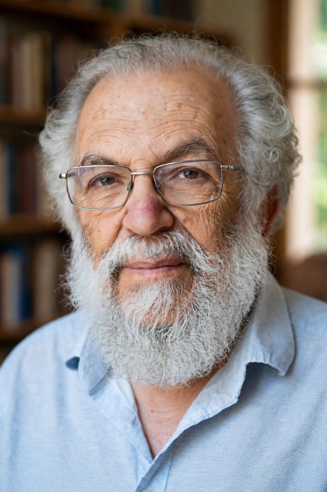

| Born | 21 March 1939 Haifa, Mandatory Palestine |
|---|---|
| Died | 2 May 2022 (aged 83) London, England |
| Education | Hebrew University of Jerusalem; University of Oxford (DPhil) |
| Doctoral advisor | H. L. A. Hart |
| Main interests | Legal philosophy, political philosophy, ethics |
| Notable ideas | Service conception of authority; perfectionist liberalism; exclusionary reasons |
Joseph Raz FBA (21 March 1939 – 2 May 2022) was an Israeli legal, moral and political philosopher. He was one of the most prominent advocates of legal positivism and an influential theorist of liberal perfectionism. Raz spent most of his career as a professor of philosophy of law at the University of Oxford, and later taught at Columbia Law School in New York.
Raz was born in Haifa in Mandatory Palestine. He studied law at the Hebrew University of Jerusalem, graduating in 1963, and then completed a doctorate at Balliol College, Oxford, under the supervision of H. L. A. Hart. He returned to teach at the Hebrew University before moving to Oxford, where he became a fellow of Balliol College and, in 1985, Professor of Philosophy of Law. In 2002 he joined the faculty of Columbia Law School while retaining a part-time position at King's College London. Raz died in London in May 2022.
In The Authority of Law (1979) Raz defended a positivist account of law grounded in the sources thesis: the existence and content of law can be identified by social facts alone, without moral argument. He explained the nature of legal reasoning and the rule of law, arguing that conformity to the rule of law is a virtue of legal systems analogous to the sharpness of a knife — a virtue that makes law a more effective instrument, whatever ends it serves.
Raz's theory of authority, developed in The Morality of Freedom (1986) and elsewhere, is known as the service conception. On this view, an authority is legitimate when its subjects are more likely to comply with the reasons that apply to them by following the authority's directives than by acting on their own judgement (the "normal justification thesis"). Directives of a legitimate authority function as exclusionary reasons: reasons not to act on certain conflicting first-order reasons.
The Morality of Freedom (1986), which won prizes from the Political Studies Association and the American Bar Association, presented a perfectionist form of liberalism. Raz argued that personal autonomy — the ability to author one's own life by choosing among valuable options — is a central component of well-being, and that the state may legitimately promote the availability of valuable options rather than remaining neutral between conceptions of the good. His later work ranged widely over value theory, reasons, responsibility and the philosophy of action, including Engaging Reason (1999), Value, Respect and Attachment (2001), The Practice of Value (2003) and From Normativity to Responsibility (2011).
From Wikipedia, the free encyclopedia.